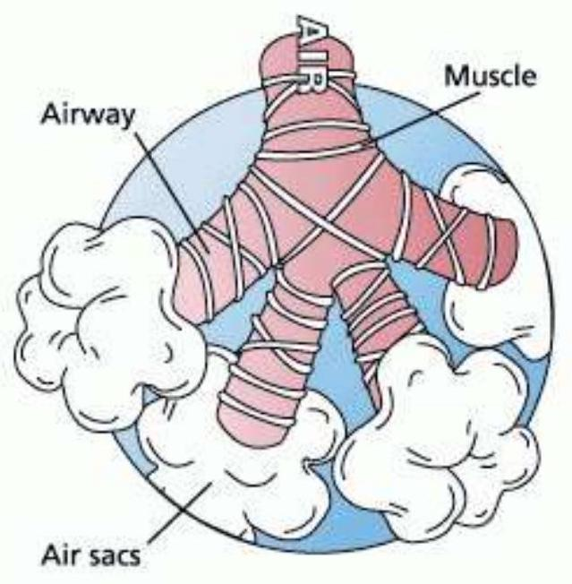
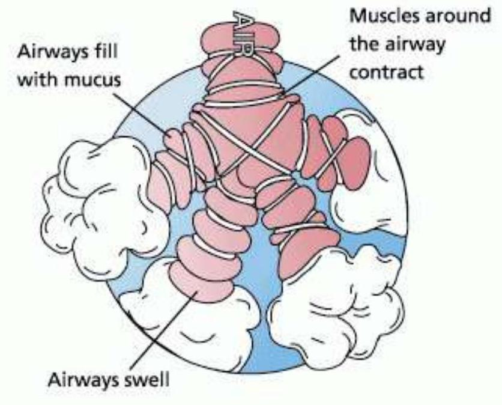
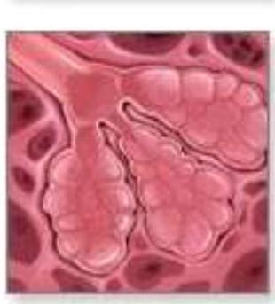
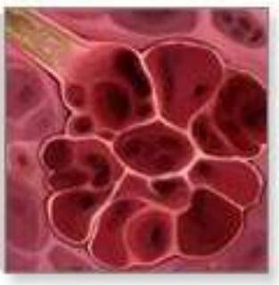
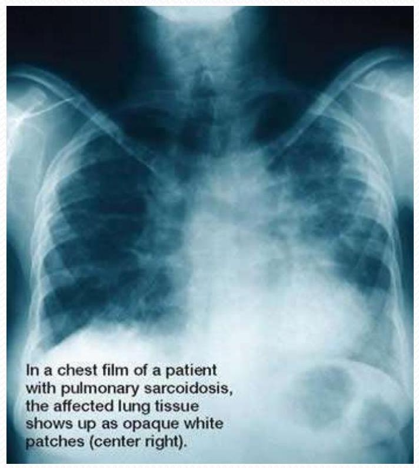

Applied Aspects and Diseases
Overview of Chemical Effects
| Chemical | Breathing Effect |
|---|---|
| Increased CO2 (more H+) | Increase |
| Decreased CO2 (less H+) | Decrease |
| Slight decrease in O2 | Effects CO2 system |
| Large decrease in O2 | Increases ventilation |
| Decreased pH (more H+) | Increase |
| Increased pH (less H+) | Decrease |
Applied Aspects
Lung Cancer
1. Non-Small Cell Lung Cancer
- Squamos cell Carcinoma
- Adenocarcinoma
- Large Cell Carcinomas
2. Small Cell Lung Cancer
Symptoms
- Constant Chest Pain
- Shortness of Breath
- Wheezing
- Recurring lung infections such as Pneumonia or Bronchitis
- Blood or Rust coloured Sputum
Risk Factors
- Smoking, Second hand smoke, Smoking Marijuna cigarettes
- Recurring inflammation such as TB & Pneumonia
- Asbestos exposure, Talcum powder
- Cancer causing agents like Arsenic, Vinyl Chloride, Nickel Chromates, Uranium, Coal, Ethers
Diagnosis
- Chest X-ray, Bronchoscopy
- Sputum Cytology, Mediastinoscopy
- Needle biopsy
Treatment
- Surgery : Segmental or Wedge Resection, Lobectomy, Pneumonectomy
- Radiation therapy
- Chemotherapy
Chronic Obstructive Pulmonary Diseases(COPD)
1. Asthma
Asthma is a chronic, inflammatory lung disease involving recurrent breathing problems. The characteristics of asthma are three airway problems:
- Obstruction, Inflammation, Hyper-responsiveness
Before an Asthma Episode
After an Asthma Episode
2. Chronic Bronchitis
Chronic bronchitis is a long-term inflammation of the bronchi, which results in increased production of mucous, as well as other other changes.
3. Pulmonary Embolism
Pulmonary embolism, a severe and life-threatening condition, is the blocking of the pulmonary artery by foreign matter such as: a blood clot (thrombus) or pieces of it, Fat, Air, Tumor tissue
Cystic Fibrosis
Cystic fibrosis is an inherited disease characterized by an abnormality in the glands that produce sweat and mucus. It is chronic, progressive, and may be fatal.
Symptoms
- Thick mucus that accumulates in lungs and intestines, which can cause:
- Malnutrition, Poor growth, Frequent respiratory infections, Breathing difficulties, Lung disease.
Diagnosis
- Chemical tests, Chest x-rays, Lung function tests, Sputum cultures, Stool evaluations.
Treatment
- Physical therapy, Exercise to loosen mucus, stimulate coughing and improve overall physical condition, Medications to reduce mucus and help breathing
Pneumonia
Pneumonia is an inflammation of the lungs caused by bacteria, viruses or chemical irritants. It is a serious infection or inflammation in which the air sacs fill with pus and other liquid.
- Lobar pneumonia affects one or more sections (lobes) of the lungs.
- Bronchial pneumonia (or bronchopneumonia) affects patches throughout both lungs.
Types
- Bacterial
- Viral
- Pneumonic
Symptoms
- Shaking chills, High temperature
- Chattering teeth,
- Severe chest pain, Cough that produces rust-colored or greenish mucus, Heavy perspiring
- Rapid pulse, Rapid breathing, Bluish color to lips and nail beds, Confused mental state or delirium
Treatment
- Treatment may include antibiotics for bacterial pneumonia. Antibiotics may also speed recovery from mycoplasma pneumonia and some special cases. There is no clearly effective treatment for viral pneumonia, which usually heals on its own.
- Other treatment may include appropriate diet, oxygen therapy, and pain and cough medication.
Pulmonary Emphysema
Emphysema is a chronic lung condition in which alveoli, or air sacs, may be:
- Destroyed, Narrowed, Collapsed
- Stretched, Over-inflated
Normal healthy air sacs
Emphysema: weakened and collapsed air sacs with excess mucus
Symptoms
Early symptoms of pulmonary emphysema may include:
- Cough & Shortness of breath
Other symptoms may include:
- Fatigue, Sleep problems
- Anxiety, Depression
- Heart problems, Weight loss
Treatment
- Quitting smoking
- Antibiotics for bacterial infections, Oral medications
- Bronchodilators and other inhaled medications
- Exercise -- including breathing exercises to strengthen the muscles used in breathing as part of a pulmonary rehabilitation program to condition the rest of the body
- Oxygen supplementation from portable containers
- Lung reduction surgery to remove damaged area of the lung
- Lung transplantation
Tuberculosis
Tuberculosis (TB) is a chronic bacterial infection that usually infects the lungs, although other organs are sometimes involved. TB is primarily an airborne disease.
Symptoms
- Cough that will not go away
- Fatigue
- Loss of appetite, loss of weight
- Fever, night perspiring
- Coughing blood
Diagnosis
- TB Skin tests
- X-Rays
- Sputum Tests
Treatment
- Short-term hospitalization
- Medications
Other Diseases
- Acute Bronchitis
- Influenza
- Interstitial Lung Diseases
- Bronchiolitis
- Alveolitis
- Vasculitis
- Pulmonary Hypertension
Sarcoidosis
